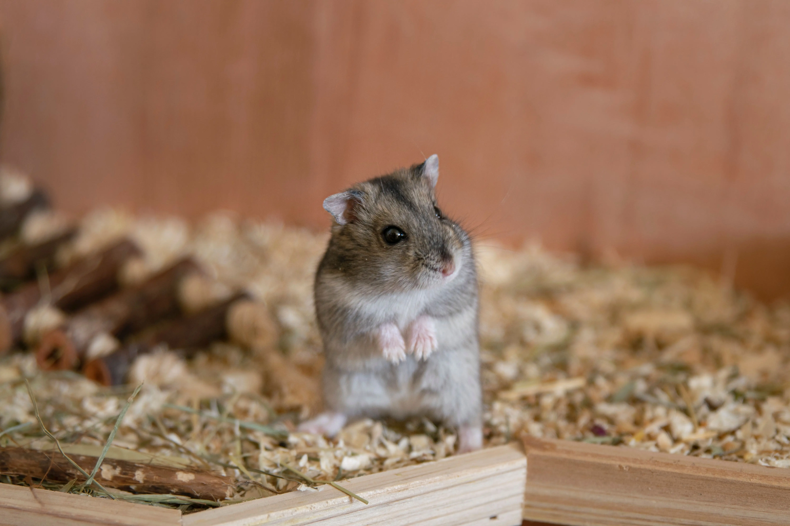

飼養兔子的基本需求和注意事項分享
貓咪一直叫不停？四種常見情況與處理重點
鬆獅犬難相處 個性有些神經質
【2022最新】台北市17座「狗狗公園」一次介紹，16班寵物專屬公車路線直接抵達
動物行為學專家-戴更基，他的專欄以深入、生動的方式介紹動物的行為模式和心理特徵。幫助飼主了解自己的寵物。
進入專欄
從今天開始，吃好一點。攝取大量水份。新鮮、天然健康食材。養成不挑食的好習慣。新鮮食材、簡單步驟， 讓貓咪更健康， 一起做貓鮮食吧！
進入專欄

可愛虎斑貓，給他一個溫暖的家

小米克斯待領養，活潑可愛又聰明

中型犬待領養，性格友善親人，適合作為護家犬或陪伴寵物

老年狐狸犬，安靜友善，尋找有愛心的家庭
